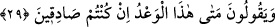
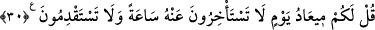

görürsün. “Biz seni ancak âlemlere rahmet olarak gönderdik” (el-Enbiyâ, 21/107)
âyeti bu araştırma ve incelemeye delâlet eder. Mevcûdâtın ağaçlarının hepsi bu hitaba
dâhildir.
“Fakat insanların çoğu bunu bilmezler” sözü, varlık ağacının cüzleri olan ve meyve
olma mertebesine ulaşamayan insanlardan çoğunun anlattıklarımızın hakikatini
bilmediklerine işâret etmektedir. Çünkü meyvenin halleri ağaca değil, ancak hâline
vâkıf olabilmek için vasfı kendisi gibi olan meyveye mâlumdur.
İnsan-ı kâmili insandan gayrısı bilmez.
29. “Eğer sözünüzde doğru iseniz bu vaadettiğiniz (kıyâmet) ne zaman
kopacak?” derler.
Müşrikler cehâlet ve azgınlıklarının fazlalığından alay etmek için Rasûlullah (s.a.)’e
ve O’na îman edenlere: “Eğer sözünüzde” bu işin varlığı ve meydana gelmesi
konusunda “doğru iseniz bu vaadettiğiniz” müjdelediğiniz cennet ve uyarıp
korkuttuğunuz cehennem ne zamandır ve kıyâmet “ne zaman kopacak?” derler.”
30. De ki: “Size öyle bir gün vâdedilmiştir ki, ondan ne bir saat geri kalabilirsiniz,
ne de ileri geçebilirsiniz.”
“De ki: “Size öyle bir gün” diriltilme (ba’s) günü “vaadedilmiştir ki,” ansızın
geldiğinde “ondan” o vaadedilen vakitten “ne bir saat geri kalabilirsiniz, ne de ileri
geçebilirsiniz.”
Bu cevapta tehdidde mübalağa olduğu gizli değildir. Çünkü burada muhal oluşunda
erteleme, aklen imkânsız olan öne alma gibi sayılmıştır.
et-Te’vîlâtü’n-Necmiyye’de der ki: “Burada taleb erbabına ve onlara vaad edilen
semeriyet/meyve olma rütbelerini acele talep etmelerine işâret edilmektedir. Yâni taleb
ehli “bizi müjdelediğiniz kemale ne zaman ulaşacağız?” derler. “De ki: “Size öyle bir
gün vaadedilmiştir ki, ondan ne bir saat geri kalabilirsiniz, ne de ileri
geçebilirsiniz.” sözü ile onlara cevap verilmektedir. Nasıl her ağacın meyve vermesi,
meyvenin yetişip olgunlaşması için belli bir vakit varsa aynı şekilde her sâlikin de
kemal rütbesine ulaşması için belli bir vakit vardır. Nitekim Allah Teâlâ şöyle buyurur:
“Nihayet insan güçlü çağına erip kırk yaşına ulaşınca.” (el-Ahkâf, 46/15). Bu sır
sebebiyle Allah Teâlâ Habîbi’ne şöyle buyurmuştur: “O halde peygamberlerden azim